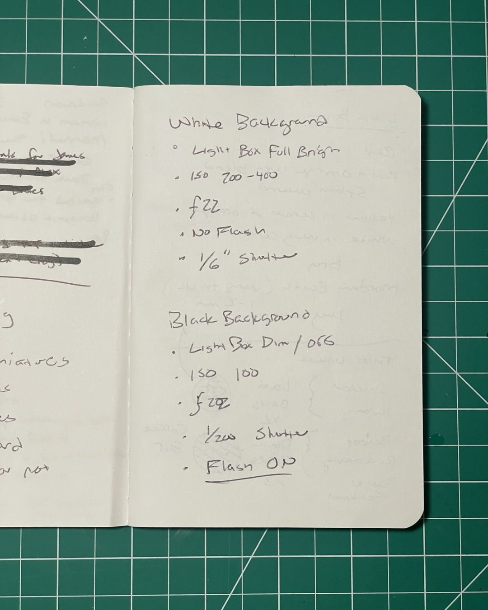
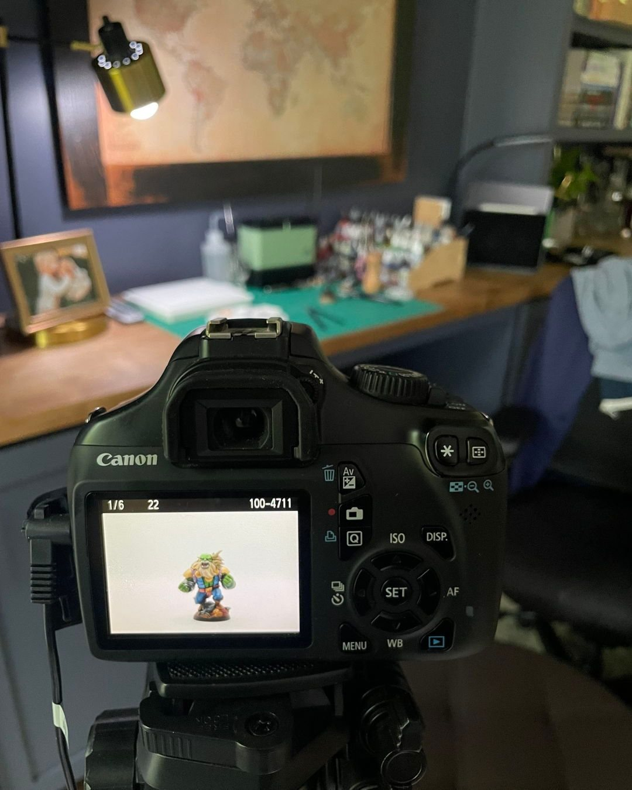

Shooting minis on a 2013 Canon
I’ve been using my old-ass Canon Rebel T5i from 2013 to shoot my minis. I can only assume the “i” stands for internet, even though it has zero WiFi, Bluetooth, or any other modern conveniences. But what it does have is a decent sensor and just enough manual control to make my tiny plastic heroes look their best.
With my light box setup, I made myself a quick cheat sheet of settings for both white and dark backgrounds — swipe to see it in the second pic. Having those numbers dialed in saves me a ton of trial and error.
I still shoot all my video with my iPhone (because trying to shoot video with this DSLR is pain and suffering), but for stills, I really prefer what I get out of this chunky old Rebel. The depth, the crispness, the way it handles shadows — I find it beats my phone every time.
So if you’ve got an old DSLR gathering dust in a closet somewhere, consider giving it a second life for your hobby pics. Good lighting and consistent settings do most of the heavy lifting — fancy new gear is nice, but it’s not always necessary.
Got any old gear secrets you’re still using? Drop ‘em below 👇
#MiniaturePhotography #CanonRebelT5i #OldCameraNewTricks #MiniaturePainting #HobbyPhotography #LoFiGear